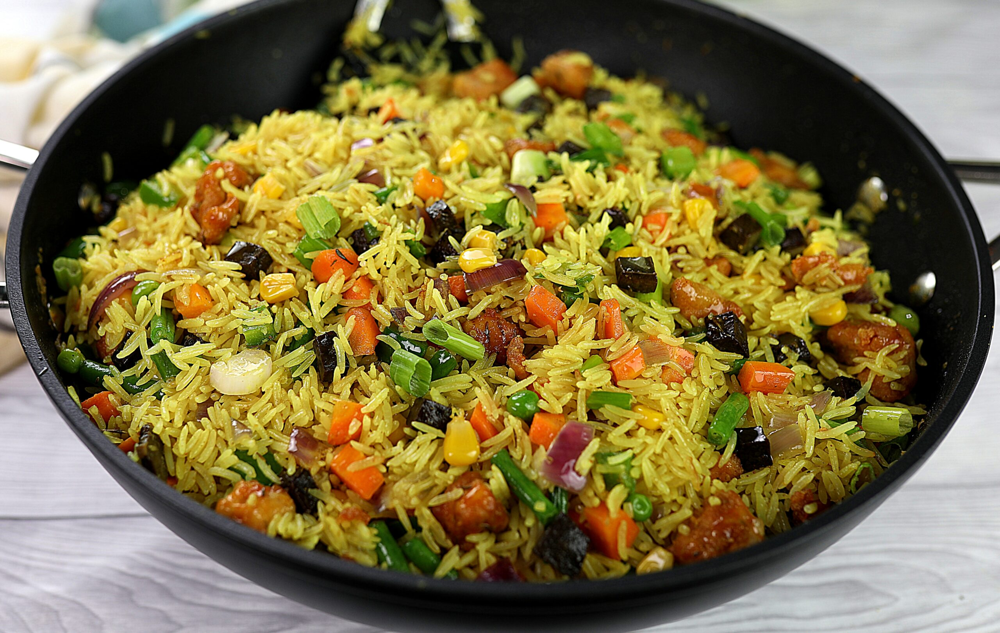

FRIED RICE

DESCRIPTION
Fried rice is a dish of cooked rice that has been stir-fried in a wok or a frying pan and is usually mixed with other ingredients such as eggs, vegetables, seafood, or meat. It is often eaten by itself or as an accompaniment to another dish
INGREDIENTS
- Rice
- Chicken
- Egg
- vegetables
- Onion
- Soy sauce
- Cooked rice
- Spring Onion
STEPS
- Chop and Prepare the Ingredients.
- Season the Meat and Prepare the Egg and Rice.
- Mix the Ingredients.
- Add Soy Sauce, Oyster Sauce and Salt to Taste.
- Serve.